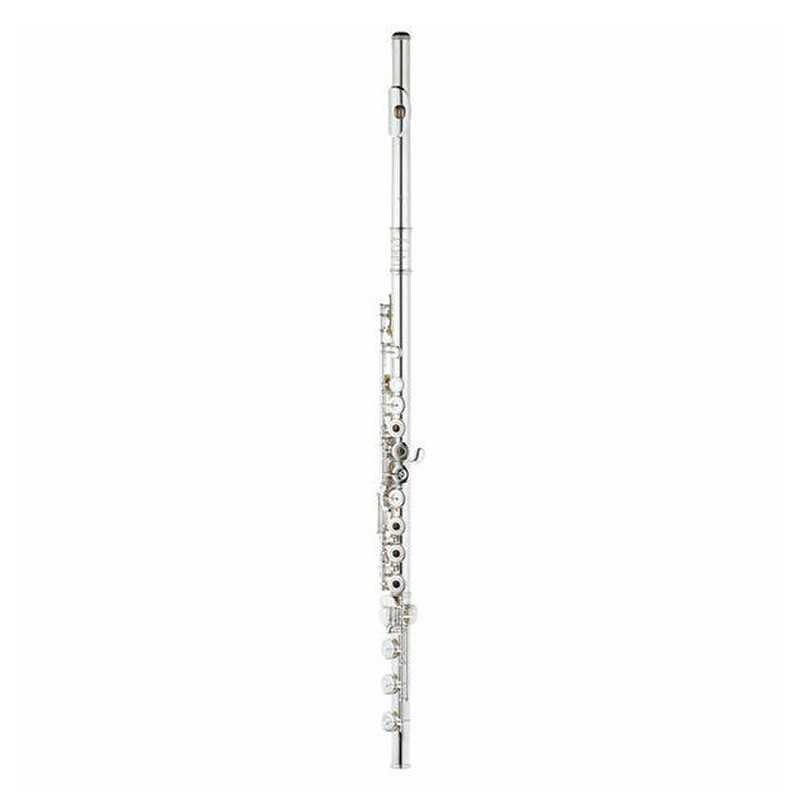
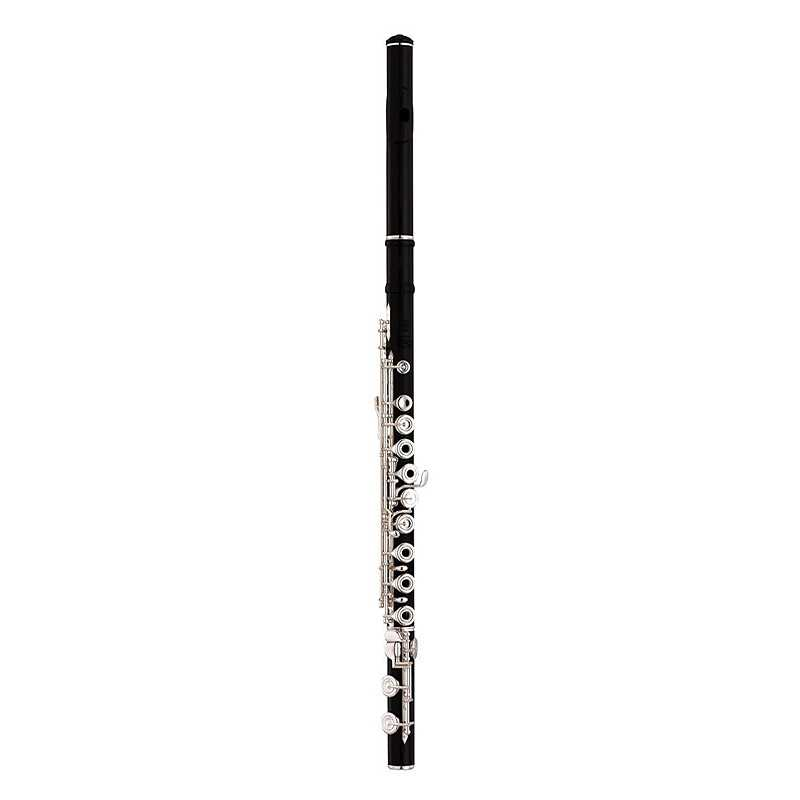
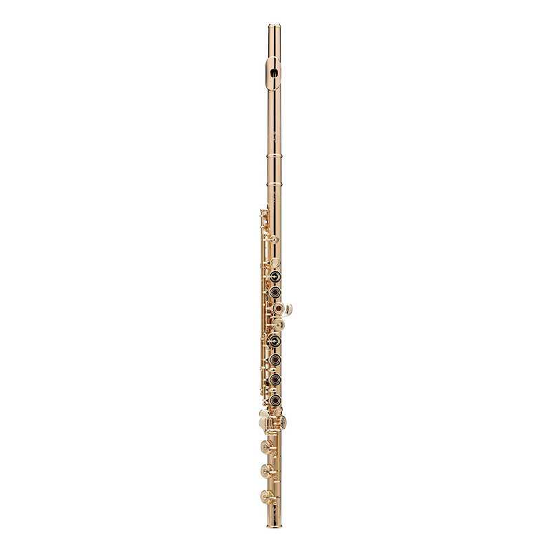

MURAMATSU DS RBEO HEAVY DE PLATA MACIZA

El modelo DS es el de más alta calidad construido por Muramatsu para las flautas de plata con chimeneas estiradas. Tiene una rápida respuesta y la capacidad de crear un bello legato y un fuerte staccato. Estas cualidades son posibles gracias a las chimeneas estiradas resultado de su tecnología de alta precisión. La placa de la embocadura facilita una ejecución sencilla y permite a la flauta responder a una amplia gama de sutiles variaciones en color tonal. El mecanismo está construido por nuestros artesanos mediante técnicas desarrolladas a lo largo de muchos años. Todos los artesanos de Muramatsu son al mismo tiempo buenos flautistas que mantienen vivo el espíritu del fundador de la compañía. Continuamente investigan, desarrollan y crean prototipos. Están casi obsesionados por construir solo las mejores flautas.
Su profundo respeto por las flautas y por aquellos que aman a las flautas es la razón por la cual los flautistas de todo el mundo esperan todo de las flautas Muramatsu y confían plenamente en su calidad. El esfuerzo constante realizado por el fundador vio sus frutos en cada una de las flautas construidas por Muramatsu y bajo la dirección de su sucesor, el difunto Osamu Muramatsu. Las flautas Muramatsu se han convertido en las flautas profesionales de los flautistas de todo el Mundo. Esta loable tradición ha sido transmitida a las nuevas generaciones, siendo las flautas Muramatsu las elegidas por los flautistas japoneses, los flautistas de las orquestas internacionales y por los mejores solistas de todo el Mundo.
Precio: 8.700€
FLAUTA YAMAHA YFL874 WH DE MADERA

Proporcionan también toda la potencia intrínseca de una flauta de plata. Por este motivo, las flautas de madera artesanales de Yamaha no sólo son idóneas para los solos y la música de cámara, sino también para la orquesta sinfónica moderna. Su excelente proyección tonal es el resultado de combinar la avanzada escala Type 4 con la exclusiva cabeza EC de Yamaha y sus orificios especialmente diseñados, similares en tamaño a los de las flautas de metal.
La embocadura y el cuerpo de la cabeza están esculpidos en una sola pieza de magnífica granadilla para proporcionar una resonancia pura y natural. La superficie de la embocadura es extremadamente cómoda y proporciona un control seguro.
La cabeza está conectada al cuerpo mediante una espiga de plata como en las flautas de plata. Esto añade direccionalidad al sonido. Ayuda también a reducir considerablemente el peso de la flauta.
Una espiga de plata similar situada en el interior del conector de la cabeza reduce el peso e impide que se agriete. Añade también cuerpo tonal para mejorar la proyección.
Los orificios están fabricados con granadilla tallada con suma precisión para aumentar su ancho, como los de las flautas de metal. Éste es otro factor que contribuye a la exacta afinación y claridad tonal de la flauta.
Precio: 12.000€
FLAUTA POWELL HANDMADE CUSTOM 19.5K 14k DE ORO

Powell introdujo este material, único en el mundo de la flauta, en el año 2004. Se caracteriza por un potente sonido con gran proyección, y un amplio rango en colores y flexibilidad. Permite al músico experimentar nuevas dimensiones en el sonido.
Verne Q. Powell Flutes fue fundada en 1927 por Verne Powell para proporcionar a los flautistas profesional, flautas hechas “a medida” con materiales preciosos.
Las Flautas Powell® Custom Handmade han sido el estándar de flautas de oro del mundo de la flauta durante más de ocho décadas. Los instrumentos hechos en los años 20 todavía están en uso. Los instrumentos Powell destacan por su color, tono, facilidad de respuesta y fiabilidad. Las flautas Powell® Custom actuales continúan esta tradición y se hacen a mano con las especificaciones exactas de nuestros artesanos. Cada instrumento es una herramienta altamente funcional, así como una impresionante obra de arte.
Precio: 83.000€